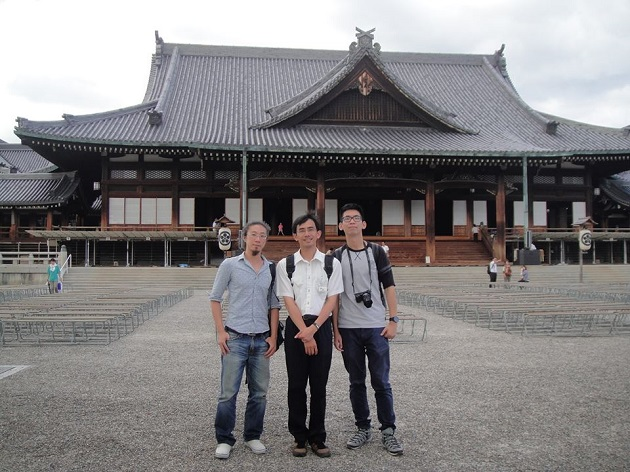

首頁 │ 三原典 │ 演講稿 │ 教理 │ 文章 │ 學習資源
珍惜緣分 謝匡宇  海外部的聖勞到2月27日結束了。當天原本預定每天早上例行朝會上，我和另一位韓國同事要發表離職感言。但由於前一天本部新人事異動發表，原本的例行朝會改成臨時會議，宣佈部長及庶務課長都要到其他單位，相形之下我和韓國同事的離職變成了小事。 (新部長為原田中次長，去年11月到過台灣。新庶務課長為原傳道廳書記寺田老師。) 第二次離開海外部和上次去大阪念書不同，這次終於有離開的感覺了。到27日前9天之內參加9場飯局，感謝大家的好意，但肚子有點吃不消。幸好每天儘量參加神殿早拜，都有得到「祐護」，順利把殘餘的碳水化合物排出身體。 休息2天，3月1日起要到西日本做一趟小旅行。這次旅行得到3個人幫助。下面一一介紹。 2日要利用日本國鐵發行的「青春18」車票，直接坐車到山口縣岩國參觀名勝「錦帶橋」。「青春18」雖然同日之內可以無限搭乘，但從天理出發的話抵達已接近黃昏，因此前一天先到位在大阪城附近的御華分教會過夜。御華分教會也是台北萬里部教所的上級教會。 我和教會的井岡會長是前年認識的。井岡會長每年都會去台灣，媳婦是台灣人。他對中醫很有興趣，有一回拿一本中醫的書到詰所來要我向他解釋。之後不只是中文，會長還常常拿天理教的資料來翻譯課給我參考，或希望我翻譯成中文給信者看。會長特別偏好一些在秘辛級，也就是本部不願意公開承認的歷史。其中一些貴重的資料，我把它放進目前在編輯的書「御筆先導讀」裡。 旅行回來後，我會到京都北部的花背住大約一個星期。一位日裔巴西朋友誠人最近在那裡做陶藝。 和誠人的緣分也是從天理開始的。他的前女友曾經在天理服務，兩個人論及婚嫁，因為女友是教會繼承人，原本無信仰的他聽完別席領理，為將來成為會長做準備，我和他就是在聽別席期間認識的。沒想到，原本約定好女方在上級教會擔任女青年結束後就要結婚，女方卻在上級教會跟一起服務的青年跑了。 誠人那時候非常難過，而且女方家人冷淡沒誠意的處理方式，讓他對天理教非常失望。那之後我儘量每個月去滋賀縣找他，讓他了解女方的背叛是所屬教會及個人行為，不是正常天理教徒的做法。我離開大阪回天理後，誠人也常常週末開車來，簡單吃個飯，喝咖啡聊聊天，又開1個半小時的車回滋賀。 誠人去年底離職，這幾個月來專心做他喜歡的陶藝。預計今年會回巴西。 離開花背後，3月中要去首爾和母親會合。出發前一天晚上要借住在京都的朋友大飛家。 大飛說起來是朋友的朋友的朋友。一開始是來日本的飛機上認識一位台灣朋友，然後間接又間接認識了大飛。在大阪期間我們幾人常常一起吃飯。後來其他人陸續回台灣，大飛打工度假結束後又來日本念書。現在雖然不常見面，但我們常常一起討論日本政治經濟。這次大飛提供一天住宿，還讓我寄放去韓國的行李。也幫我消化2次「青春18」的套票(一張票可用5次)。 大飛來過天理2次。其中一次是來參加月次祭。 人與人相遇是緣分。雖然知道要珍惜，但是一忙起來常常會忘記，另外，心境也是不斷在改變。這次離開海外部準備回台，雖然有點感傷，但是信仰與生活還是要不斷持續下去。我很高興自己來日本這9年，以前喜歡的歌現在還是喜歡，原本完全不懂天理教，現在懂了一些，而且越來越喜歡。 讓自己的心保持不變，不論是工作、信仰，或遭遇人生的轉折，保持一樣的心境，讓別人永遠找得到同一個你。我想，這是珍惜緣分最好的方法。 |